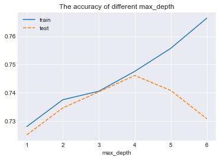

The first boosting algorithm we will go through is AdaBoost. You can see the sklearn documentation of AdaBoostClassifier. The code below shows how we initiate a simple AdaBoost classifier and train it on the dataset.
Compare the accuracy on the train set and test set. The values should be close otherwise this is an indicator of over-fitting.
Hyper-parameter tuning
The hyper-parameters we try here are not optimal. You could tune it by yourself to see the effect of different hyper-parameters. Below is an example code of how we tune max_depth.
1 2 3 4 5 6 7 8 910111213141516171819202122
# create a list of all possible depth valuesdepths=[1,2,3,4,5,6]models=[]train_accuracy=[]val_accuracy=[]# create a list of models fordepthindepths:base_estimator=DecisionTreeClassifier(max_depth=depth)model=AdaBoostClassifier(base_estimator=base_estimator,n_estimators=20,algorithm="SAMME.R",learning_rate=0.5,random_state=SEED)model.fit(X_train,y_train)models.append(model)# evaluate model performancetrain_score=model.score(X_train,y_train)val_score=model.score(X_val,y_val)train_accuracy.append(train_score)val_accuracy.append(val_score)print('Depth: {} Train Accuracy: {} Test Accuracy: {}'.format(depth,train_score,val_score))
Plot the train and test accuracy
1234567
plt.plot(depths,train_accuracy,'-',label='train')plt.plot(depths,val_accuracy,'--',label='test')plt.title('The accuracy of different max_depth')plt.xlabel("max_depth")plt.xticks(depths)plt.legend()plt.show()
You should get something like

Questions
According to the above figure, which one is the optimal max_depth? Why?
What hyper-parameters can be changed too reduce over-fitting?
Optimal Model
Once you get the optimal depth, you could calculate model performance on the test set using the optimal model we found in the previous step.
Another very powerful property of tree-based algorithms is that it is more explainable compared with other algorithms. We can display feature importance using the following syntax: